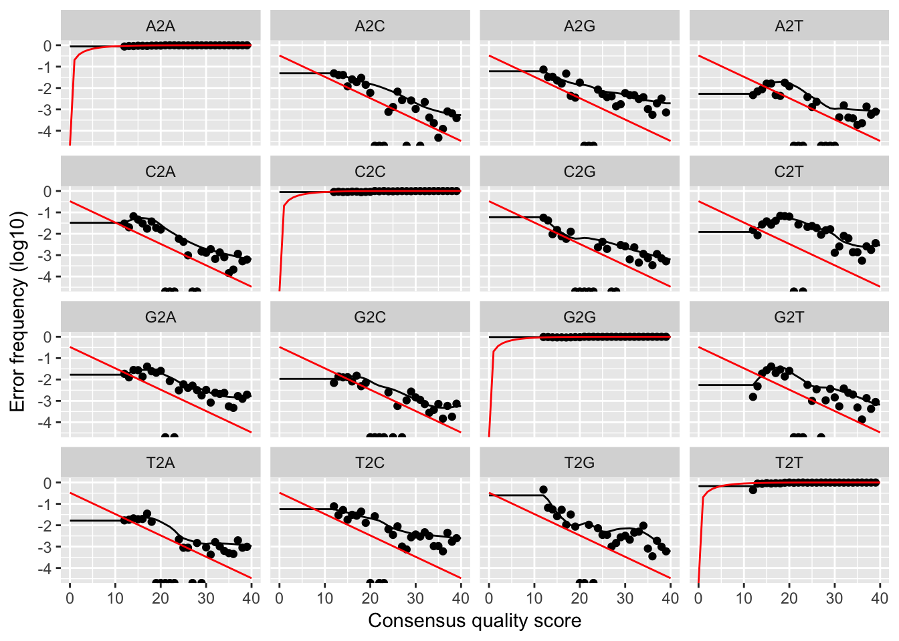
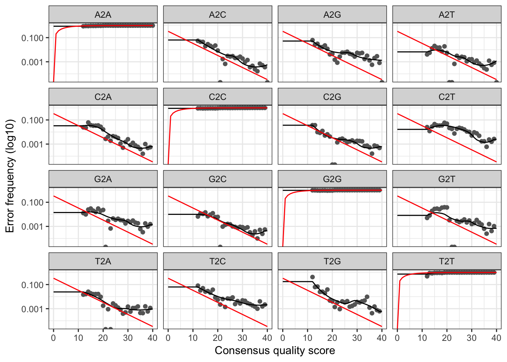

The dada(...) function implements the high-resolution sample-inference at the core of the dada2 package. Because dada(...) resolves sequence variants exactly, it is possible to analyze samples separately before combining them together in a final sequence table. However, the dada(...) function also allows samples to be pooled together for the error rate estimation and sample inference steps. Here we demonstrate that functionality, and discuss the pros and cons of pooling.
Load the necessary libraries:
library(dada2); packageVersion("dada2")## [1] '1.2.1'library(microbenchmark); packageVersion("microbenchmark")## [1] '1.4.2.1'We’ll be working with the same data used in the tutorial, so grab that data if you don’t have it already and then set your working directory to its location:
path <- "~/MiSeq_SOP" # CHANGE ME to the directory containing the fastq files after unzipping.
fns <- list.files(path)
fnFs <- fns[grepl("_R1_001.fastq$", fns)]
sample.names <- sapply(strsplit(fnFs, "_"), `[`, 1)We’ll trim and filter just the forward reads for simplicity:
filtFs <- paste0(sample.names, "_filtered.fq.gz")
for(i in seq_along(fnFs)) {
fastqFilter(file.path(path, fnFs[[i]]), file.path(path, filtFs[[i]]),
maxEE=2, truncLen=240, truncQ=2, rm.phix=TRUE)
}Dereplicate and name our samples:
drps <- derepFastq(file.path(path,filtFs))
names(drps) <- sample.names
The first type of pooling we’ll consider is pooling samples for error rate estimation. This is the default functionality of the dada(...) function when passed a list of samples, but for comparison purposes we’ll first look at what happens if we estimate error rates using just one sample alone:
dd1 <- dada(drps[[1]], err=NULL, selfConsist=TRUE, multithread=TRUE)## Initial error matrix unspecified. Error rates will be initialized to the maximum possible estimate from this data.## Initializing error rates to maximum possible estimate.
## Sample 1 - 7228 reads in 2014 unique sequences.
## selfConsist step 2
## selfConsist step 3
## selfConsist step 4
## selfConsist step 5
##
##
## Convergence after 5 rounds.plotErrors(dd1, nominalQ=TRUE)
The two things to look for in the output of plotErrors are that the observed error rates (black dots) are reasonably well fit by the modeled error rates (black line), and that the error rates are sensible, in particular that they are mostly decreasing with quality score.
Now let’s pool our samples while estimating error rates:
dd <- dada(drps, err=NULL, selfConsist=TRUE, multithread=TRUE)## Initial error matrix unspecified. Error rates will be initialized to the maximum possible estimate from this data.## Initializing error rates to maximum possible estimate.
## Sample 1 - 7228 reads in 2014 unique sequences.
## Sample 2 - 5382 reads in 1667 unique sequences.
## Sample 3 - 5539 reads in 1501 unique sequences.
## Sample 4 - 2970 reads in 922 unique sequences.
## Sample 5 - 2977 reads in 955 unique sequences.
## Sample 6 - 4417 reads in 1314 unique sequences.
## Sample 7 - 6870 reads in 1799 unique sequences.
## Sample 8 - 4635 reads in 1460 unique sequences.
## Sample 9 - 15934 reads in 3680 unique sequences.
## Sample 10 - 11554 reads in 2803 unique sequences.
## Sample 11 - 12171 reads in 3079 unique sequences.
## Sample 12 - 5100 reads in 1590 unique sequences.
## Sample 13 - 18312 reads in 3772 unique sequences.
## Sample 14 - 6329 reads in 1502 unique sequences.
## Sample 15 - 4116 reads in 1213 unique sequences.
## Sample 16 - 7480 reads in 1859 unique sequences.
## Sample 17 - 4823 reads in 1207 unique sequences.
## Sample 18 - 4935 reads in 1401 unique sequences.
## Sample 19 - 6586 reads in 1739 unique sequences.
## Sample 20 - 4377 reads in 920 unique sequences.
## selfConsist step 2
## selfConsist step 3
## selfConsist step 4
## selfConsist step 5
##
##
## Convergence after 5 rounds.plotErrors(dd, nominalQ=TRUE)
The difference is not large, but the fit between the observed points and the modeled line has clearly improved by pooling together more data.
There are two additional things to note here. First, it is not advised to pool samples that don’t share an “error history”, in particular samples that come from different sequencing runs or different PCR protocols. Samples from different runs should typically be run through the dada(...) function separately, so that the correct run-specific error rates can be learned.
Second, it is generally not necessary to estimate error rates across an entire sequencing run. Because error rate estimation requires multiple loops through the dada(...) algorithm, it increases compute time significantly. Therefore it is often desirable to estimate error rates on a subset of the samples, and then use those error rates to process all of the samples with selfConsist=FALSE.
De novo OTU methods must pool samples before processing them, as without pooling the labels between samples are not consistent and cannot be compared, i.e. OTU1 in sample 1 and OTU1 sample 2 won’t be the same. DADA2 resolves sequences exactly, and because exact sequences are consistent labels samples can be processed independently (and this is the default behavior).
Independent sample processing has two major advantages: Computation time is linear in the number of samples, and memory requirements are flat with the number of samples. However, pooling allows information to be shared across samples, which makes it easier to resolve rare variants that were seen just once or twice in one sample but many times across samples. Pooled sample inference is also supported by calling dada(..., pool=TRUE).
Let’s start by processing our samples using the default sample-by-sample inference:
microbenchmark(dd.sep <- dada(drps, err=dd[[1]]$err_out), times=1)## Sample 1 - 7228 reads in 2014 unique sequences.
## Sample 2 - 5382 reads in 1667 unique sequences.
## Sample 3 - 5539 reads in 1501 unique sequences.
## Sample 4 - 2970 reads in 922 unique sequences.
## Sample 5 - 2977 reads in 955 unique sequences.
## Sample 6 - 4417 reads in 1314 unique sequences.
## Sample 7 - 6870 reads in 1799 unique sequences.
## Sample 8 - 4635 reads in 1460 unique sequences.
## Sample 9 - 15934 reads in 3680 unique sequences.
## Sample 10 - 11554 reads in 2803 unique sequences.
## Sample 11 - 12171 reads in 3079 unique sequences.
## Sample 12 - 5100 reads in 1590 unique sequences.
## Sample 13 - 18312 reads in 3772 unique sequences.
## Sample 14 - 6329 reads in 1502 unique sequences.
## Sample 15 - 4116 reads in 1213 unique sequences.
## Sample 16 - 7480 reads in 1859 unique sequences.
## Sample 17 - 4823 reads in 1207 unique sequences.
## Sample 18 - 4935 reads in 1401 unique sequences.
## Sample 19 - 6586 reads in 1739 unique sequences.
## Sample 20 - 4377 reads in 920 unique sequences.## Unit: seconds
## expr min lq mean
## dd.sep <- dada(drps, err = dd[[1]]$err_out) 32.13928 32.13928 32.13928
## median uq max neval
## 32.13928 32.13928 32.13928 1Now we pool the samples for sample inference:
microbenchmark(dd.pool <- dada(drps, err=dd[[1]]$err_out, pool=TRUE), times=1)## 20 samples were pooled: 141735 reads in 23616 unique sequences.## Unit: seconds
## expr min
## dd.pool <- dada(drps, err = dd[[1]]$err_out, pool = TRUE) 73.68671
## lq mean median uq max neval
## 73.68671 73.68671 73.68671 73.68671 73.68671 1The pooled sample inference took longer, about twice as long in this case, but the delta between independent and pooled processing grows as study size increases. In practice, pooled processing can be used for Miseq scale data (especially if taking advantage of the multithreading introduced in version 1.1) but sample-by-sample processing remains computationally tractable out to any study size (eg. 20 Hiseq runs).
We’ll also take a quick look at the differences in output:
st <- makeSequenceTable(dd.sep)
st.sep <- removeBimeraDenovo(st, multithread=TRUE)
st <- makeSequenceTable(dd.pool)
st.pool <- removeBimeraDenovo(st, multithread=TRUE)
dim(st.sep); dim(st.pool)## [1] 20 267## [1] 20 288As expected, pooling detected a few more sequence variants, due to an increased power to detect rare variants.
sq.sep <- getSequences(st.sep)
sq.pool <- getSequences(st.pool)
sum(!sq.sep %in% sq.pool);sum(sq.sep %in% sq.pool); sum(!sq.pool %in% sq.sep)## [1] 15## [1] 252## [1] 36sum(st.sep[,!sq.sep %in% sq.pool])## [1] 185sum(st.sep[,sq.sep %in% sq.pool])## [1] 135168sum(st.pool[,sq.pool %in% sq.sep])## [1] 127771sum(st.pool[,!sq.pool %in% sq.sep])## [1] 955The large majority of sequences, and the vast majority of reads (>99% here) are commonly assigned between these methods. Either provides an accurate reconstruction of your sampled communities.